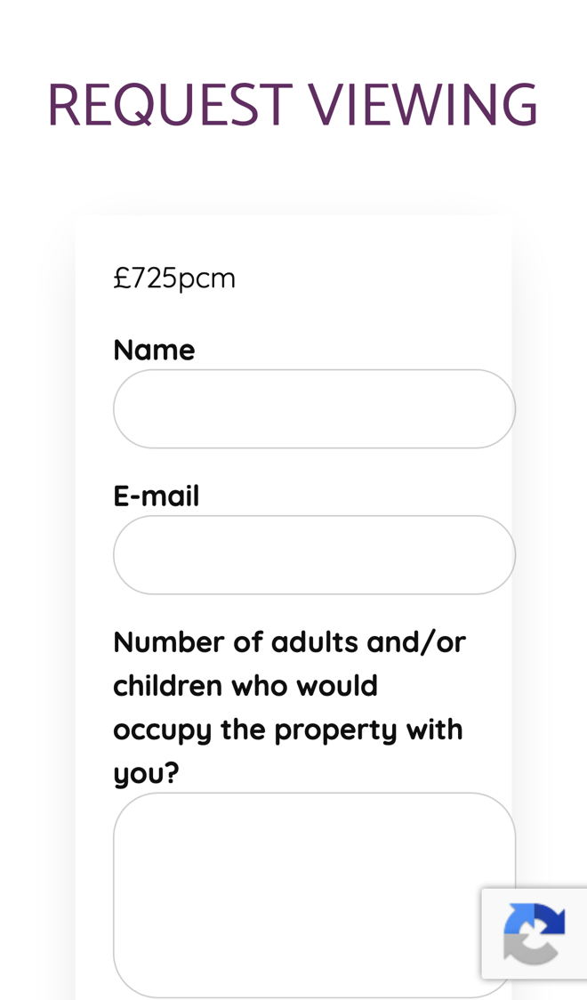
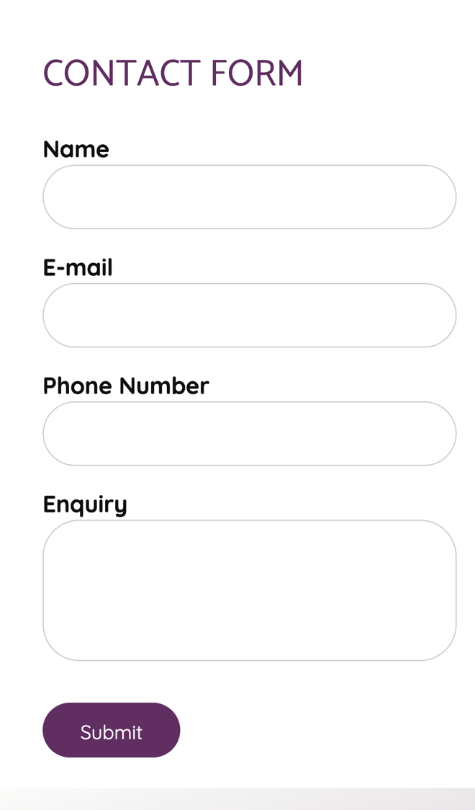

Eiddo: viewings and valuations booked faster
I went through your website on a phone, the way a tenant looking for a home or a landlord looking for an agent would, and read your lettings, fees, FAQs and viewing request pages. Your site is clear and fully bilingual. Where I think you'd win more instructions, and save time, is what happens after someone presses Request viewing or Free Valuation.
What's already working
Three things I'd change
Let suitable applicants pick a viewing time
Each let has a "Request viewing/info" form that already asks about "employment status", "annual gross income" and pets. Your Let Only service promises to "Pre vet all viewers to check suitability" and to run "Accompanied viewings". Nothing lets an applicant choose a time.

Every request means a call or email back to check the answers and find a time, and good tenants are often asking about more than one home.
- Their answers are checked against the landlord's rules for that property, such as no pets.
- Those who fit see your free viewing slots and pick one. The others get a polite reply straight away.
- The viewing goes in your diary, and a reminder text goes out the day before, in Welsh or English.
Book the free valuation in one step
Your FREE VALUATION button opens the general contact form: "Name", "E-mail", "Phone Number" and "Enquiry". Your FAQ says a sales appraisal visit costs nothing: "This service is entirely free."

Someone thinking of selling or letting may ask two or three agents. Whoever gets the visit in the diary first has the best chance of the instruction.
- The button asks a few quick questions: the address, sell or let, bedrooms and when they're thinking of moving.
- They pick a time for your visit straight from your diary.
- You get the details before you go, and they get a confirmation and a reminder.
Catch the calls you miss while out
Your office number is 01407 761403, and your team is often out on "Accompanied viewings", "Regular quarterly inspections" and appraisal visits.
When everyone is out at a viewing, a landlord or tenant ringing in may not try again, and an instruction can go elsewhere.
- A missed call gets a text back within a minute, in Welsh and English.
- The text links to your lettings, the valuation booking and your maintenance page, so most callers can sort it there and then.
- Back at the office you see every missed caller in one list, with what they wanted.
Your website, answering for you
An assistant that answers the questions you get asked again and again, at any hour. These answers come only from your own website: your fees and management pages, your FAQs and your tenant app page.
Anything it can't answer, it passes to you with the customer's details.
What happens next
For five local businesses I'm setting up one of these for free, in return for an honest review. Pick whichever would help most.
I'm Tom Williams and I run Tomoni-AI. If a 20-minute chat would help, reply to my email or give me a ring.
Call 07971 512158Email Tom